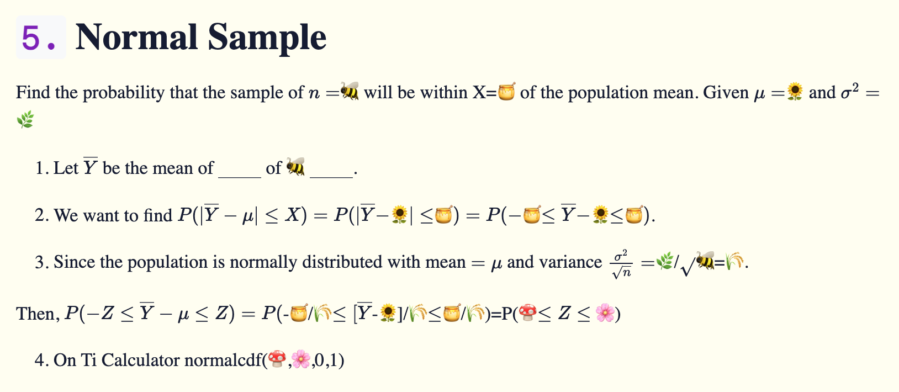

Final Prep. Statistics
Notes consist of method of distribution function (CDF), Jacobian (uni-variate and bivariate), MGF (uni-variate and bivariate), and Normal Sample.

1. Method of Distribution Function (CDF)
Given the density function \(f(y)\) the distribution function \[F_Y(y)=\int_{\text{lower}}^{y}f(t)dt=F_Y(t)|_{t=\text{lower}}^{t=y}=F_Y(y)\]
For \(U=\color{red}\text{FUNCTION WITH Y}\) , when y = lower, u = \(\color{yellow}\text{MIN}\) and when y = upper, u = \(\color{orange}\text{MAX}\).
By definition of the CDF, the CDF of U is,
\(\begin{equation}\label{a}\begin{split}F_U(u) &= P(U\leq u)\\&=P(\color{red}\text{FUNCTION WITH Y}\color{black}\leq u)\\&=P(Y\leq\color{blue}\text{FUNCTION WITH u}\color{black})\\&= F_Y(\color{blue}\text{FUNCTION WITH u}\color{black})\\&=\color{purple}\text{NEW FUNCTION WITH u}\end{split}\end{equation}\)
\(F_U(u)=\begin{cases}0 & u<\text{MIN}\\ \color{purple}\text{NEW FUNCTION WITH u}\color{black} & \color{yellow}\text{MIN}\color{black}\leq u\leq \color{orange}\text{MAX}\color{black}\\1 & \color{orange}\text{MAX}\color{black}\leq u\end{cases}\)
- Since \(f_U(u)=F'_U(u)\),
\(f_U(u)=\frac{d}{du}(F_U(u))=\color{green}\text{DERIVATIVE OF NEW FUNCTION WITH u}\)
The complete pdf of U is,
\[f_U(u)=\begin{cases}\color{green}\text{DERIVATIVE OF NEW FUNCTION WITH u}\color{black} & \color{yellow}\text{MIN}\color{black}<u<\color{orange}\text{MAX}\color{black}\\0 & \text{otherwise}\end{cases}\]
2. Jacobian (Univariate)
Graph U (Y,u) to verify g is monotone and increasing.
\(U=g(Y)\) where \(g(y)=U\). Since g is a monotinc increasing function we can apply the Transformation Method.
The inverse of g is \(h(u)=g^{-1}(y)=\)🥚 for \(\color{yellow}\text{MIN}\) \(\leq u\leq\) \(\color{orange}\text{MAX}\), and \(h'(u)=\) 🐤.
The pdf of U is then, \(f_U(u)=f_Y(h(u))\cdot |h'(u)|=f_Y(\)🥚\()\cdot|\)🐤\(|=\color{white}\text{A Solution}\)
And the complete pdf is,
\[f_U(u)=\begin{cases}\color{white}\text{A Solution}\color{black} & \color{yellow}\text{MIN}\color{black}<u<\color{orange}\text{MAX}\color{black}\\0 & \text{otherwise}\end{cases}\]
Note:
- \(y^2\) is monotonic on \(0\leq y\)
3. MGF

The mgf of Y is \(M_Y(t)=\color{white}\text{Moment Generating Function of Y}\color{black}=E_Y(t)=E(e^{ty})\).
By definition of the mgf, the mgf of U is,
\(\begin{equation}\label{b}\begin{split}M_U(t) &= E(e^{tU})\\&=\text{something with the form of }E(e^{ty})\\&=\color{white}\text{something similar to known distribution}\end{split}\end{equation}\)
- Therefore, mgf U has the form of \(\underline{\text{a known distribution}}\) with parameters \(\color{yellow}\text{Parameter}\) and \(\color{orange}\text{Parameter}\).
Note: (For Bivariate)
- Let \(Y_i\) be the ith \(\underline{\quad\quad\quad}\) for \(i=1,2\).
4. Jacobian (bivariate)
The pdf of \(Y_1\) is \(f(y_1)=\)🌗 and the pdf of \(Y_2\) is \(f(y_2)=\)🌓.
Since \(Y_1\) and \(Y_2\) are independent, their joint pdf is \(f_{Y_1,Y_2}(y_1,y_2)=f(y_1)f(y_2)=\)🌗🌓=🌝
Let \(U_1=\)🏃\(=h_1(y_1,y_2)\) and \(U_2=\)🌎\(=h_2(y_1,y_2)\). Then, \(y_1=...=\)⛵\(=h_1^{-1}(u_1,u_2)\) and \(y_2=...=\)🌊\(=h_2^{-1}(u_1,u_2)\).
Then the Jacobian is, \(J=\text{det}\begin{bmatrix}\frac{\partial y_1}{\partial u_1} & \frac{\partial y_1}{\partial u_2}\\ \frac{\partial y_2}{\partial u_1} & \frac{\partial y_2}{\partial u_2}\end{bmatrix}=\) ⚓
Recall: det\(|\begin{smallmatrix}a & b \\ c & d\end{smallmatrix}|=(ad)-(bc)\)
Therefore the joint pdf of \(U_1\) and \(U_2\) is \(f_{U_1,U_2}=(u_1,u_2)=f_{Y_1,Y_2}(h_1^{-1}(u_1,u_2),h_2^{-1}(u_1,u_2))\times|J|=\)🌜⛵🌊🌛\(\times\)|⚓|
5. Normal Sample
Find the probability that the sample of \(n=\)🐝 will be within X=🍯 of the population mean. Given \(\mu=\)🌻 and \(\sigma^2=\)🌿
Let \(\overline{Y}\) be the mean of \(\underline{\quad\text{ }\quad}\) of 🐝 \(\underline{\quad\text{ }\quad}\).
We want to find \(P(|\overline{Y}-\mu|\leq X)=P(|\overline{Y}-\)🌻\(|\leq\)🍯\()=P(-\)🍯\(\leq \overline{Y}-\)🌻\(\leq\)🍯\()\).
Since the population is normally distributed with mean \(=\mu\) and variance \(\frac{\sigma^2}{\sqrt{n}}=\)🌿/\(\sqrt{}\)🐝=🌾.
Then, \(P(-Z\leq\overline{Y}-\mu\leq Z)=P(\)-🍯/🌾\(\leq [\overline{Y}\)-🌻]/🌾\(\leq\)🍯/🌾)=P(🍄\(\leq Z\leq\) 🌸)
- On Ti Calculator normalcdf(🍄,🌸,0,1)
Note:
Variance = 4 \(\rightarrow\sqrt{4}=\sigma^2\)
Standard Deviation = 4 \(\rightarrow 4=\sigma^2\)
\(Z=\frac{\overline{Y}-\mu}{\frac{\sigma^2}{\sqrt{n}}}=\frac{\sqrt{n}(\overline{Y}-\mu)}{\sigma^2}\)